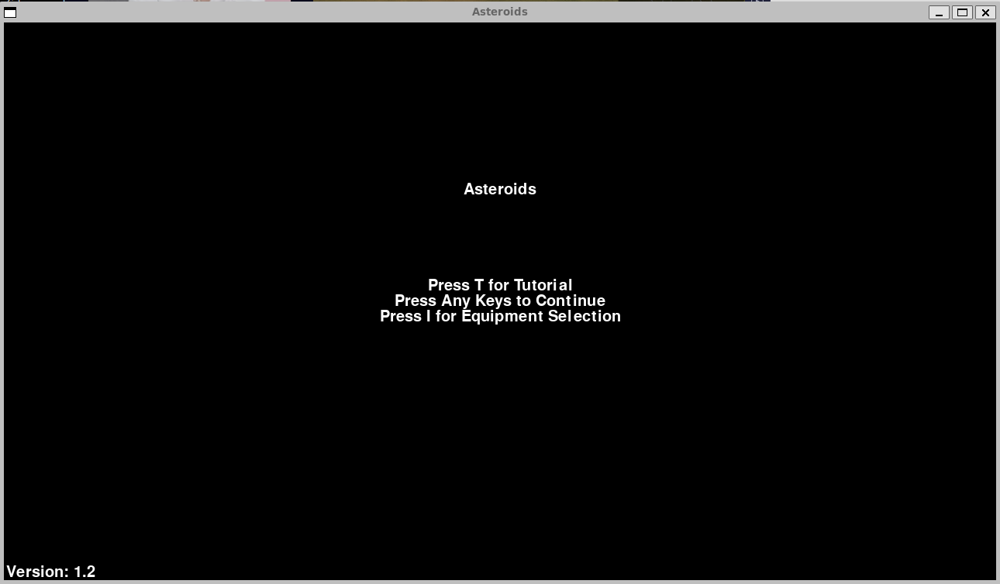
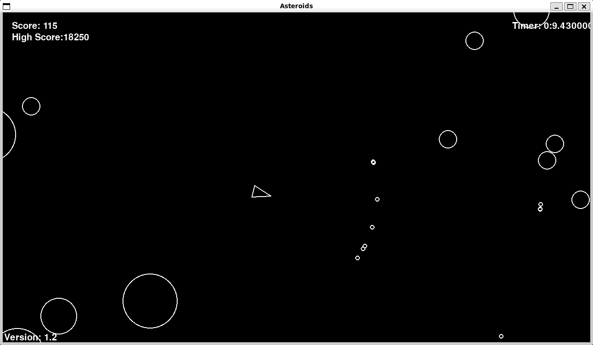

projects
I made few guided and non guided projects to practice my skills on. Most are available on my github repository for viewing and downloading their source code.
Here is an interesting one:
Asteroids
I created a simple version of Asteroids from 1979 in Python 3.12.1 using Pygame 2.6.1 During this project, I practiced objected oriented programing heavely. As of now, its still not the final version but its fully functional. Feel free to check it out.
 